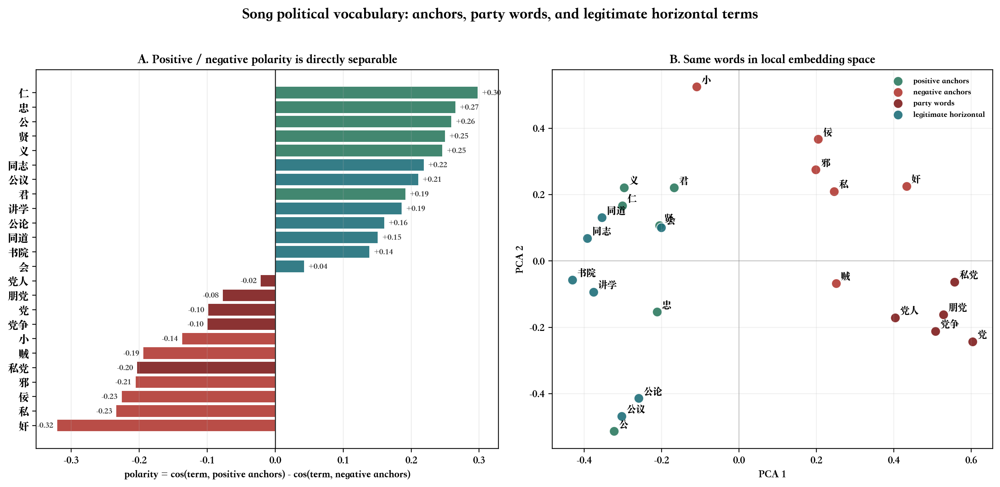
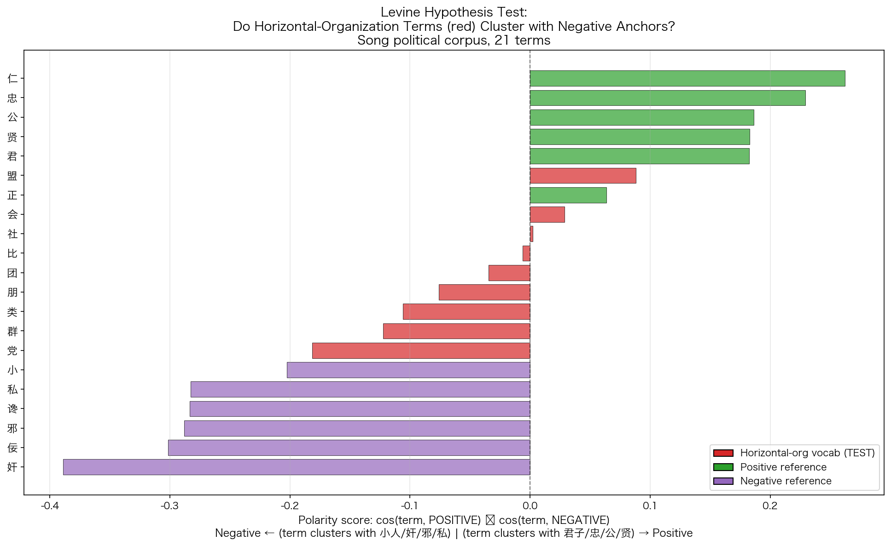
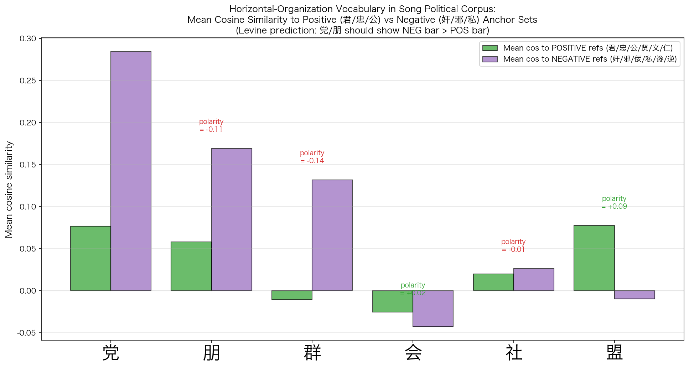
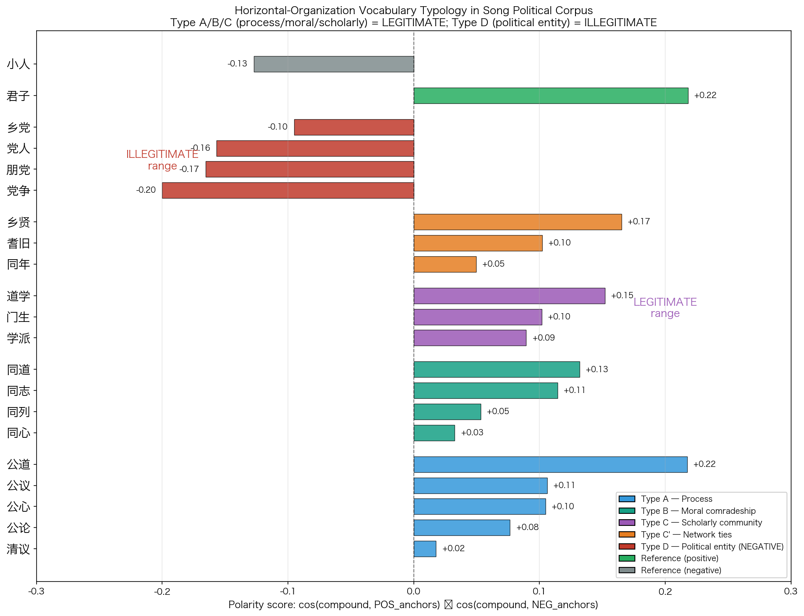
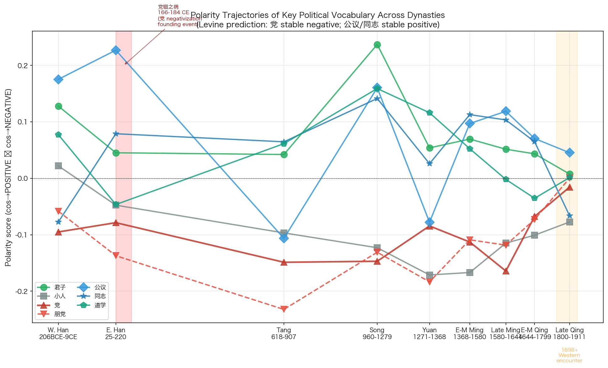
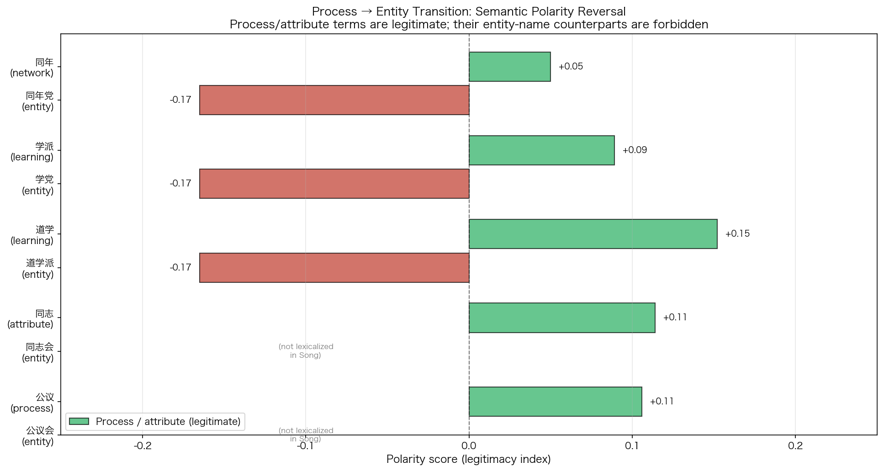
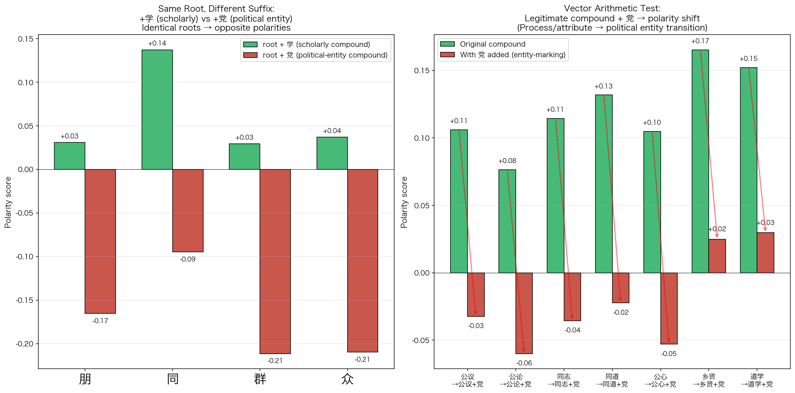
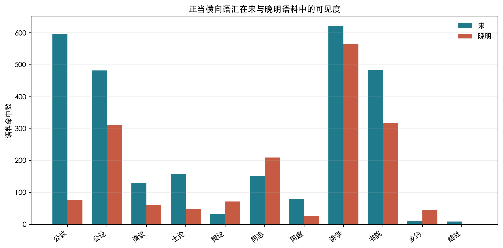

摘要
传统中国政治从不缺横向关系。士人有师友、同年、同乡、门生故吏，有书院、讲会、文社、乡约、会馆、公所，有清议、公论、荐贤、弹劾、联名请奏。若把这些都算作“横向联盟”，那么所谓帝国官僚政治并非单纯纵向秩序。可是，横向关系存在，并不等于横向政治组织取得合法名位。真正需要追问的，不是“有没有结党”，而是一个更窄、也更关键的问题：传统中文政治语汇能否承认一个持续组织化、公开争取朝政方向和人事安排的合法党派。
Levine 命题的价值，正在于把问题从制度史推回语汇史：不是先拿现代 party 概念寻找中国对应物，而是观察中文政治词汇中哪些横向关系能被正面命名，哪些一旦进入国家权力便落入罪名。宋代词向量模型显示，“党”“朋党”“党争”等词靠近“小、奸、佞、邪、私”等负向锚词；“公议”“公论”“同志”“同道”“讲学”“书院”“会”等词则在若干时段取得不同程度的正向空间。跨十个时段的全词表扫描进一步显示，友谊、德性、学术、誓约、公共议论和地方共同体各有合法化通道，而可实体化为政治集团的党类词长期负向。
结论是：传统中文政治语汇长期压制稳定合法党派性，但周期性开放合法横向政治性的窗口。合法的是“公议”，不是“党议”；合法的是“同道”，不是“同利”；合法的是“讲学”“会文”“乡约”“会社”，不是以党派身份争夺朝局。横向关系可以存在，可以政治化，甚至可以形成强大士人网络；但它必须把自己说成公、道、学、义、教化、荐贤。一旦它被写成持续集团、操纵人事、把持公论、交通朝局，便会被“朋党”“私党”“社党”“门户”“党局”“党狱”等词捕获。庆历党议、东林门户化、复社案和晚清政党词汇分别显示了这一边界的形成、扩张、高压端和转换端。
一、问题不在横向关系，而在合法名位
帝国政治不可能只靠君臣纵线运行。皇帝需要知道地方官贤否，需要听见朝廷外的士论，需要借助官僚之间的举荐、弹劾、书信和声望网络。士人也不可能只以孤立个体进入政治：他们读同一种经义，受同一师承，结同年同乡，互相题跋、保荐、声援、攻讦。若没有这些横向联系，官僚国家甚至无法识别人才。
但中国传统政治语言对这些横向联系极不放心。它一方面需要君子相与，另一方面害怕臣下比周；一方面需要公议帮助国家辨明贤否，另一方面害怕公议背后形成门户；一方面允许士人讲学、会文、立约、结社，另一方面又担心会社一旦联通科名、人事和朝局，便成为私党。国家需要横向网络，却不愿承认横向网络成为一个独立政治主体。
这就是“公议”与“朋党”之间的结构性张力。二者都可能指向不从皇帝个人直接发出的政治判断，都可能由士人之间互相确认、传播和放大。但“公议”声称自己代表公共是非，“朋党”则意味着私人集团夺取公共判断权。前者能成为忠贤自辩的语言，后者能成为排逐忠贤的武器。问题从来不是有没有一群人站在一起，而是他们站在一起时被命名为什么。
现代政党政治承认公开组织化竞争，承认利益、理念和政策路线可以由团体代表，并以制度安排处理竞争。传统中国政治语汇没有这个位置。它可以承认“同道”，因为道在私人之上；可以承认“公议”，因为公在集团之上；可以承认“讲学”，因为学在权力之外；可以承认“乡约”，因为约在教化之内。它很难承认“党派”，因为党派正是一个组织化、持续化、能争夺国家判断权的横向政治实体。
因此，传统政治语汇的核心边界不是“横向/纵向”，而是“公的横向过程/私的政治实体”。横向过程可以合法，横向实体则必须不断证明自己不是私党。
二、Levine 的立论：从制度空缺转向语义空缺
Levine 的问题意识可以概括为一句话：在传统中国政治思想和政治书写中，合法横向政治组织为什么难以获得稳定名称？这一问题若只从制度史回答，容易变成常识：没有议会制度，没有现代结社权，没有竞争性政党，自然没有合法政党。但制度解释还不够。更深的一层是，即使在没有现代制度的时代，语言也可以给某种政治关系预留位置；如果语言始终把某一类关系推向污名，那么制度出现以前，这一类关系已经很难在正当性上站住。
这里的 Levine，首先指 Ari Daniel Levine 对北宋派系语言的研究。其 2005 年论文《Faction Theory and the Political Imagination of the Northern Song》把北宋党争放在政治修辞和政治想象中考察，指出 1068 至 1127 年间的朝廷冲突不仅是人事和政策冲突，也是围绕“党”“朋党”展开的道德化语言竞争。其 2008 年专书《Divided by a Common Language: Factional Conflict in Late Northern Song China》进一步把这种冲突放入晚北宋政治文化整体中处理。真正值得推进的，不是某个孤立判断，而是这种把派系政治作为语言实践和政治实践同时考察的方法。
Levine 方法的关键，是不把“党”直接等同于 party，也不把“社”“会”“盟”直接等同于 association。它要求先看语词的邻近关系：党与什么词同场出现？它更接近“公”“忠”“义”“贤”，还是更接近“私”“奸”“邪”“小”？“公议”“同道”“讲学”是否能在政治语境中承担正当性？“会”“社”“盟”何时是礼俗、学术或互助，何时又被拖入党名？这不是词典式释义，而是政治语言的力场分析。
Levine 的论证还有一个不能省略的前提：北宋派系语言是二分化、道德化的。政治行动者并不单纯说“我们有不同政策”，而是把己方写成君子、忠贤、公义，把对手写成小人、奸邪、私党。君主也被放在辨别者的位置上：他必须识别何者为君子之朋，何者为小人之党。这样一来，派系语言不只是描述现实，而是制造现实；谁能定义“朋党”，谁就能决定哪些横向关系可被保留，哪些必须被驱逐。
近年的数字人文研究也把问题推进了一步。De Weerdt、Ho、Wagner、Qiao、Chu 对宋代党籍名单进行网络分析，强调“党”与“朋党”既是政治修辞，也是政治实践中的松散联盟；这些联盟并无现代政党的纲领和组织结构，却能在名单、书写和关系感知中获得可操作的形态。这一研究提醒我们：不能把派系完全还原为话语虚构，也不能把它当成现代组织实体；它恰恰处在命名、关系和政治行动之间。
这一立论比简单的“古代无政党”更有力。因为古代没有现代政党，并不能推出古代没有合法横向政治性；同样，古代有书院、文社、乡约，也不能推出古代有合法党派。真正要解释的是：为什么横向关系一旦靠近朝政权力，就会经历一场命名转换。朋友可以是朋友，讲学可以是讲学，公论可以是公论；但当这些关系开始影响升黜、科名、奏疏、政策和朝局，它们便可能被称为朋党、党人、党羽、党局。
这使研究对象从单个词变成了一整套语义网格。网格的一端是“君子、忠、贤、公、义、道、学”；另一端是“小人、奸、佞、邪、私、利、比周、朋党”。横向关系若能留在前一端，便可成为国家可用的士人共同体；若被拖到后一端，便成为遮蔽君主、操纵国家的人事机器。传统政治语言的高压，不在于完全禁止人们相与，而在于要求所有相与都通过公私之辨受审。
三、宋代语义空间：党不是中性组织词
宋代是检验这一问题的理想入口。此时士人政治高度发达，科举、馆阁、台谏、书院、讲学、文字交往和公共议论共同构成了密集的横向网络；同时，庆历以来的朋党指控、元祐与绍圣之间的党籍政治，又使“党”成为高度敏感的罪名。若中文政治语汇中存在合法党派的稳定位置，宋代应当最可能显露出来。
词向量模型给出的第一幅图并不复杂，却很有解释力：在宋代政治语料中，“党”与若干可集团化的词一起靠近负向政治道德区；“会”“盟”“讲学”“书院”“公议”等词则分散在不同位置。这个空间不是现代政治概念的投影，而是宋人文本自身的邻近关系。它显示，宋代语汇确实允许某些横向关系正当化，但“党”并不处在这种正当化中心。

单字“党”当然多义。它可以是乡党、宗党、上党地名，也可以指偏私、朋党、党争、逆党。若不消歧，任何统计都会把地名、宗族、地方共同体和政治集团混在一起。重新抽样拆分后，政治朋党只是“党”字用法的一部分，却是进入朝政语境时最有解释力的一部分。换言之，不能用所有“党”字证明政治党派负面；但也不能因为“党”有乡党、宗党等义项，就否认“朋党”“党争”“党人”在政治语汇中的强负载。


正负锚词诊断进一步说明问题。“党”的政治意义不是靠一个绝对数值决定，而是靠它与正负锚点的相对距离决定。如果“党”主要指普通聚合，它应当接近友、群、会、社等中性或正向群体词；如果它主要承担政治污名，它就会靠近奸、邪、私、小等负面词。宋代模型呈现的是后一种趋势，尤其在复合词“朋党”“党争”中更清楚。

四、横向关系的七层谱系
若只盯住“党”，结论会太粗。传统中文里可以指称横向关系的词非常多：友、朋友、知己、君子、义士、侠、盟、誓、约、会、社、乡党、宗族、邻里、讲学、书院、公议、公论、廷议、朝议、结社、学会、政党。它们都不是纵向君臣关系，但合法性差异极大。
七层类型学把这些词拆开。第一层是双人友谊，第二层是道德身份，第三层是抽象伦理，第四层是学术活动，第五层是誓约或盟约，第六层是集体决策，第七层则分为礼俗共同体和可能法人化的组织实体。越靠近德性、学问、礼俗、公共判断，越容易合法；越靠近持续组织、集团身份和政治竞争，越容易被污名化。

| 层级 | 典型词 | 合法性来源 | 危险边界 |
|---|---|---|---|
| L1 双人友谊 | 友、朋友、知己、故旧 | 私人伦常与情义 | 进入官场请托后可能变成私交 |
| L2 道德身份 | 君子、正人、贤者、义士 | 德性与人格声望 | 被对手改写为标榜门户 |
| L3 抽象伦理 | 仁、义、忠、信、公义 | 高于私人利益的规范 | 若被证明是假公济私，则正当性崩塌 |
| L4 学术活动 | 讲学、书院、道学、学会 | 教化、修身、经义、人才培养 | 影响科名与朝政后可被称为门户 |
| L5 誓约盟会 | 盟、誓、约、会盟、同盟 | 礼制、外交、地方互助、义气 | 秘密结纳或武装化后接近谋逆 |
| L6 集体决策 | 公议、公论、廷议、朝议 | 公共判断与国家议政过程 | 若被说成某派操纵，则变成党论 |
| L7 组织实体 | 党、朋党、私党、党人、党争 | 很难取得独立合法性 | 默认接近私、利、比周、壅蔽、争权 |
全词表扫描支持这一区分。L1 双人友谊在先秦、唐、宋、晚明、清前中期、晚清均值分别约为 0.133、0.088、0.068、0.080、0.065、0.057；L3 抽象伦理长期更正，先秦约 0.187，宋约 0.185，晚清约 0.179。与之相对，L7b 单字候选法人整体偏负，先秦约 -0.033，唐约 -0.056，宋约 -0.074，晚明约 -0.085；L7b 复合被禁绝词更负，先秦约 -0.109，唐约 -0.139，宋约 -0.156，晚明约 -0.143。
这些数值并不直接证明制度史结论，却清楚揭示词汇层级：传统语汇不是不能说“人们横向结合”，而是不愿把最靠近政治组织实体的那一层正当化。它宁愿把合法横向关系分散到友谊、德性、学问、誓约、公共议论和地方礼俗中，也不愿承认一个以党派身份持续存在的政治法人。
这也解释了许多看似矛盾的材料。乡党、宗族和邻里是共同体，却不是现代政治组织；会盟可以是诸侯礼制，也可以是外交秩序，却不必指国内政治党派；书院和讲会可以制造公共意见，却仍以学问教化为名；公议和公论可以裁断人物进退，却必须宣称自己不是一派私议。传统语汇并不贫乏，它恰恰非常丰富；问题是这种丰富性把合法性分散开来，使横向政治可以到处出现，却很难凝结成一个正当的党派身份。
五、跨王朝时序：合法横向窗口并非恒定存在
若把视野只放在宋代，容易高估宋代理学与士人政治的普遍性；若只放在晚明，又容易把东林、复社的危机误读成传统全貌。跨王朝时序提供了更好的尺度。先秦、西汉、东汉、唐、宋、元、明前中期、晚明、清前中期、晚清十个时段显示：党类词长期偏负，但合法横向词并不是从来稳定，它们有生成、增强、受压、转义和再制度化的过程。


最稳定的是党类负向。单字“党”在先秦约 -0.117，唐约 -0.148，宋约 -0.157，晚明约 -0.171，清前中期仍约 -0.051；“朋党”在唐约 -0.265，宋约 -0.148，晚明约 -0.160，清前中期约 -0.091。复合党名比单字党更能排除地名、宗族等噪音，因此更能显示政治污名的稳定性。
不稳定的是合法横向词。“公议”在唐代有 42 次却偏负，宋代转为强正，晚明仍正，清前中期略正；“公论”唐代偏负，宋代转正，晚明接近中性；“同志”“同道”在宋以后更明显地承担正向横向关系。也就是说，合法横向语汇不是自古如此，而是在宋代士人政治与理学兴起后获得更强表达力。
| 词项 | 唐 | 宋 | 晚明 | 清前中期 | 含义 |
|---|---|---|---|---|---|
| 党 | -0.148 | -0.157 | -0.171 | -0.051 | 单字多义，但政治语境长期偏负。 |
| 朋党 | -0.265 | 约 -0.148 | -0.160 | -0.091 | 复合词更接近政治污名核心。 |
| 公议 | -0.138 | 约 0.181 | 0.113 | 0.063 | 宋以后成为合法横向判断的重要出口。 |
| 公论 | -0.054 | 约 0.123 | 近中性 | 略负 | 可承载公共判断，但会受门户化牵引。 |
| 同志 | 约 0.071 | 约 0.218 | 0.094 | 0.072 | 同道性共同体在宋明获得较强政治表达。 |
宋元概览：士人公共性的创造与收编
宋代改变了局面。庆历以后，台谏、馆阁、科举、学校、书信、文集和墓志共同制造出更强的士人公共性。“公议”“公论”“同志”“同道”在宋代转正，不是偶然词频，而是政治文化结构变化的结果。宋代士人必须把横向关系说成道义共同体，才能抵抗朋党罪名；欧阳修《朋党论》正是这种语义革新的代表。
《朋党论》的力量，在于它没有逃避“朋党之说”，而是把辨别权推回君主面前。欧阳修承认朋党之说“自古有之”，却要求人君辨君子小人；君子以同道为朋，小人以同利为朋。这个论证同时完成三件事：第一，它承认可疑的横向关系确实会出现；第二，它把可正当化的横向关系从利益结纳中切开；第三，它把最后裁判权交给君主，而不是交给一个自称正当的党派组织。苏轼续论更进一步，把“进朋党之说”说成小人空国之术，同时又警惕国有党则君危。宋代的反罪名化论述因此并不导向党派自由，而是导向更精密的君子/小人辨别。
叶适墓志材料显示，同一时期的正当横向词已经能用于具体政治行动。“率同志请于周丞相”不是私人赏识，而是共同求请；“以公议自为当世重轻”也不是纯粹道德自许，而是把士人判断放入公共政治空间。这类材料说明，宋代确实开出一种合法横向政治性的窗口。只是这个窗口的门楣写的是“同志”“公议”，不是“党”。横向行动越具有政治性，越必须依靠非党名词保存正当性。
元代则提示另一种命运：横向语汇可以被正统化、制度化，也可以因此失去原有锋芒。道学在宋代是讲学、师友、学派和士人公共性的核心资源；到了元明以后，它逐渐进入官学与正统谱系，成为帝国意识形态的一部分。一个词从边缘横向网络进入国家正统，并不等于横向政治性被制度承认；有时恰恰意味着它被收编，变成不再挑战朝廷判断权的学术名目。
因此，宋元之间不是简单的上升或衰落，而是合法化资源的位移。宋代士人用同道、公议、道学来回应朋党罪名；元代以后，道学的一部分被纳入正统谱系，获得更高地位，却也失去许多作为横向政治网络的危险性。它可以成为官学评价标准，可以成为道统谱系，却较难公开成为组织化朝政竞争的名义。这种收编机制后来会在明代讲学和书院中再次发生，只是晚明的政治压力更强，冲突也更暴烈。
明代概览：讲学、书院与东林复社
明代重新激活了讲学和书院。阳明学、讲会、书院、地方士绅网络，使士人可以在官僚体系之外形成判断共同体。晚明“公议”“同志”“讲学”“书院”可见度很高，说明合法横向政治性并未消失。可是一旦这些关系进入朝政，尤其进入科名、人事、台谏、内阁、阉党斗争，它们就会迅速被党名捕获。东林如此，复社亦如此。
晚明的尖锐性，在于士人公共性已经足够强，强到可以影响朝政；但制度位置仍不足以承认它为合法党派。于是出现一种结构性撕裂：士人自称讲学、公论、名节、同志，敌方称其门户、朋党、社党、党局。这不是简单的污名化，而是传统政治语汇面对高度组织化横向政治时的惯常反应。
东林材料把这个转换看得最清楚。顾宪成讲学东林，可以被说成阐明绝学、相与切劘；同一网络也可以被说成遥执朝政、京察尽归党人、门户始于东林。书院作为空间是合法或半合法的，讲学作为活动也可以合法；但书院一旦被描述为遥控朝政的组织中心，讲学就从教育实践变成党争证据。这里的关键不是东林是否真的有组织力，而是这种组织力在传统语汇中只能通过两套互相排斥的语言出现：一套是讲学、公论、同志，一套是门户、党人、朋党。
复社把东林的结构推到更高强度。复社有社名、领袖、地域网络、文字生产和科举影响，已经比许多松散士人关系更接近组织实体。但它的自辩仍然回到会文、应举、考德问业。敌方则抓住同一组织性，把它写成社党布结、横于朝野、紊乱漕规、朋党蔑旨。晚明案例之所以重要，正因为它不是纯粹观念争论，而是司法、奏疏、舆论和组织现实交织的命名战争。
由此，Levine 命题必须被历史化。唐代以前，公议、同志、道学等词的横向政治功能尚不稳定；宋代士人政治创造了更强的合法横向窗口；元代道学被收编为正统后，其横向锋芒减弱；明代讲学与书院再次激活士人网络；晚明东林、复社把这种网络推向朝政，随即被党名捕获；清代官方政治对朋党保持强烈警惕；晚清新词进入，但合法党派仍需依靠近代制度重新建构。
这不是“传统语义网格不变”的静态故事，而是一种周期性机制：每当新的士人公共性出现，语言会打开公议、同道、讲学、会社等通道；每当这些通道实体化为朝政集团，旧的党名机制又会启动，把它压回私党、门户、党局、党狱。
清代材料尤其能说明这种收压。私人伦常可以存在，士人交往可以存在，但公事不能被党援污染。清代不是消灭所有横向关系，而是把横向关系紧紧压回伦常、教化和官僚纪律中，不许它获得独立政治组织的名义。
六、汉代：党锢案与负面基线
两汉材料给后来政治想象提供了第一个基线。东汉党锢当然可以被后世重写成忠贤受难史，但“党”与“朋党”作为朝廷政治病灶的记忆也由此固定下来。范晔叙桓、灵之世，讲宦官、外戚、士人和朝臣互相指斥，党名既可用来迫害清流，也可用来描述王纲倾颓时私门集团的滋生。Levine 特别注意到这一点：北宋派系理论家回望东汉时，一方面把党锢诸贤视为君子受诬的典型，另一方面又从汉末历史中取得“朋党亡国”的警戒。
这一双重记忆非常重要。它使“党”不能被简单理解为固定实体：同一党名，可能是小人构陷君子的罪名，也可能是真实私党乱政的描述。后世政治理论因此不可能只说“禁党”，也不可能只说“有党无害”。它必须反复要求君主辨别：哪些是伪党名下的君子，哪些是真正以私害公的小人。
从词义结构看，两汉还没有发展出宋明那种成熟的“公议—同道—讲学”合法横向链条。早期材料中，正当合群更多依附于亲亲、朋友、师友、乡里、士君子相知等伦理框架；它们能够说明人与人之间可以结成信任关系，却很难直接说明朝廷内部可以有稳定竞争性集团。相反，“党”一旦进入朝政，便容易与比周、阿附、外戚、宦官、私门相邻。这个基线解释了为什么后世即使同情党锢诸贤，也仍不愿把“党”本身改写为正当组织名。被救出的不是党，而是党名之下被误伤的君子。
因此，两汉提供的不是一个“合法党派”的早期阶段，而是一种政治解释的模板：若有贤者相与，必须证明其相与出于道义；若有小人相与，则可直接归入私党。后来欧阳修说君子有朋而小人无朋，正是沿着这个模板反转罪名。他不是承认党派合法，而是把可正当化的横向性从“党”这个危险词中剥离出来，交给“君子”“同道”“公”来保存。
党锢案把这套模板变成了国家处分技术。《后汉书》记灵帝时中常侍侯览讽有司奏虞放、杜密、李膺等“皆为钩党”，下狱死者百余人，妻子徙边，附从者锢及五属；制诏州郡大举钩党，于是“天下豪桀及儒学行义者，一切结为党人”。这句话比单纯“禁党”更锋利：豪桀、儒学、行义本来不是同一种身份，却被钩党机制一次性收束为“党人”。国家不需要证明他们有统一组织、共同章程或公开纲领，只要把名节声望、太学舆论、士人交游和对宦官政治的批评放进“钩党”框架，就能把横向声望网络改写为可禁锢、可株连、可排除的政治对象。
党锢后来之所以能反复被欧阳修、苏轼、李德裕等人召回，正因为它同时保存两种记忆：一面是君子被诬为党人，另一面是党名足以摧毁国家政治判断。它既让后世相信“朋党之说”可以害忠贤，也让后世更害怕士人舆论变成朝廷外的裁判力量。汉代细案因此不是孤立反例，而是传统政治语汇中“同道可贵、党名危险”这一结构的早期定型。
七、唐代：牛李叙事与党名的朝廷化
唐代是党名进一步朝廷化的阶段。跨时段模型中，唐代“党”约 -0.148，“朋党”约 -0.265，是所有时段中极性最负的一组之一。这个结果并不意外。中晚唐政治记忆中，牛李党争成为后世谈朋党时绕不开的典型；无论现代研究如何重估“牛党”“李党”是否为后出史学构造，传统叙述中它已经成为朝臣结党、互相排击、败坏国家判断的样板。
唐代的意义不在于已经有现代党派，而在于党名开始高度朝廷化：它不只是地方宗党，也不只是朋友同类，而是与宰相、台谏、科举、任官、朋比、排挤相连。唐代“公议”频次不低却偏负，说明“公共议论”尚未稳定成为士人政治的正当出口；相反，朝廷更容易把横向结纳理解为争权与门户。
唐代还把一个后世反复出现的问题提前摆出：派系常常先在史学叙述中成形。所谓牛李，不必等同于两个有章程、有纲领、有党员边界的组织；但一旦史家、奏议和政治记忆把若干人物、科第出身、荐引关系、政策倾向和相互排击并置，“党”就取得了可叙述性。它把复杂关系压成一个责任主体，使政治失败可以归因于某一横向集团。
这一点对判断“横向联盟是否合法”尤其关键。传统政治语言并不否认人事网络真实存在，反而很擅长识别它、描写它、追责它。问题在于，这种识别通常不是为了承认组织性竞争，而是为了恢复朝廷判断权。唐代党名的朝廷化，恰好说明党类词已经足够政治，却不因此获得合法政治身份。
《新唐书》保存的牛李叙事，正好显示这种朝廷化如何运作。文宗问李德裕是否知道朝廷有朋党，德裕答称中朝半为党人，若用中立无私者则党与可破；文宗又说众人以杨虞卿、张元夫、萧澣为党魁，随即将三人出为刺史。这里的“党”已经不是民间宗族或乡里同类，而是围绕宰相、给事中、宾客出入、任官升黜形成的朝廷人事集团。它的处分方式也不是民间调停，而是迁官、贬逐、隔离。
更尖锐的是文宗所谓“去河北贼易，去此朋党难”。这句话把朋党提升到与藩镇同等级的国家难题：河北贼是军事割据，朋党则是朝廷内部判断权的割据。李训、郑注用事时，又借党名“凡不附己者皆指以二人党”，连月迁贬，班列几空。党名在这里既是对真实派系的警惕，也是新权力集团排除异己的工具；它一边指控别人为党，一边制造新的党祸。
李德裕后来辨“所谓党者，为国乎？为身乎？”尤其值得注意。他试图保留一种合法横向性：随会、叔向、汲黯、房玄龄、杜如晦等同心图国，不应算党；所谓党，应限于诬善蔽忠、附下罔上、昼夜合谋、美官要选、悉引其党。这个辨析与欧阳修相近：同心为国可被辩护，组织性私党必须排除。但它仍然没有推出合法党派概念，而是把合法横向关系重新吸收到忠、公、义、为国之中。唐代细案因此证明，传统语汇可以非常清楚地讨论派系，却仍把正当性押在“无私为国”，而不是押在“公开党派竞争”。
八、宋代：庆历党议与《朋党论》的反转
宋代文本中最能说明这一结构的，不是禁止朋党的诏令，而是欧阳修《朋党论》。它的奇处在于，欧阳修没有顺着罪名说“臣下不应有朋”。他承认朋党之说自古有之，并把问题转成君子小人之辨。君子与君子以同道为朋，小人与小人以同利为朋。小人的朋看似团结，利尽则相害；君子的朋以道义相益，能同心共济。
这是一场解释权争夺。小人用“朋党”二字空人之国，君子则必须说明，同道之朋不是私党，而是国家所需的人才共同体。欧阳修为横向关系辩护，但他辩护的不是党派，而是同道。这里恰好显示传统政治语汇的合法性边界：横向共同体若要合法，必须把自己说成道义共同体，而不能以组织利益自居。
苏轼续论欧阳子时，把危险说得更重：祸莫大于权之移人，君莫危于国之有党，有党则必争，争则小人胜。这不是否认君子之间应当相与，而是担心国家判断权从公法与君命转移到私门集团。朋党之害不在友谊，而在权力转移；不在多人同行，而在集团把公议变成私议。
庆历党议如何把荐贤网络改写成党人
庆历党议提供了宋代横向政治性的第一个细案。庆历三年前后，仁宗更用大臣，杜衍、富弼、韩琦、范仲淹在位，欧阳修、蔡襄、王素、余靖等进入言路。这个局面本来可以被解释为进贤、开言路、修弊政：君主延问执政，谏官进言，士大夫相贺。若从行动结构看，它确实是一组横向政治网络：大臣、台谏、馆阁、文人互相认识、互相援引、共同推动政治方向。
危险也正在这里发生。范仲淹被贬饶州后，欧阳修、尹洙、余靖等因直范仲淹而被逐，材料中说他们被“目之曰党人”；自此“朋党之论起”。这一句非常关键：同一组关系，在支持者那里是直言、荐贤、同道相助，在攻击者那里则变成党人。党名不是事后评论，而是排逐技术；它把一次具体政治声援改写成可成批处分的集团罪名。
欧阳修《朋党论》的反击，正是在这个压力下发生的。他没有说“我们不是一群人”，也没有说“朝廷中绝无横向声援”。相反，他承认君子之间可以有朋，但把合法性放在同道、忠信、名节上。这样做的代价很明显：横向关系得救了，党派身份没有得救。欧阳修能说君子之朋有益于国家，却不能说一个组织化派别有权作为派别持续存在。
欧阳修后来为杜衍、韩琦、范仲淹、富弼相继罢去上疏，逻辑更加赤裸：若要尽去善人，逐一求瑕很难，最有效的办法就是“指为朋党”；若要动摇大臣，便配合“专权”之名。这说明朋党罪名有两种功能：横向上，它把多个善人绑定成一党；纵向上，它把大臣与君主之间的信任改写为臣下夺权。横向关系一旦被这两种功能夹击，便不再只是朋友或同道，而变成危及君权的组织嫌疑。
苏轼续论欧阳子，又把这条线推到更矛盾的地方。他同情君子受朋党之说所害，却又说国有党则君危。这里不是立场摇摆，而是传统政治语言的内在张力：它知道“朋党之说”可以成为小人陷害君子的工具，也知道真实党争可能转移国家权柄。因此，宋代可形成强烈的反罪名化论述，却仍不能转化为合法党派论。庆历案的结论不是“横向联盟完全非法”，而是“政治性横向联盟必须被改写为君子同道，不能以党派名位自保”。
这一组文本说明，传统政治语言能够容纳“君子之朋”，却不把它制度化为合法党派。它能说同道，能说公义，能说忠贤相与；它不能公开承认一个持续存在、以组织身份竞争朝政方向的政治团体。
这一区别也出现在叶适的墓志书写中。詹体仁在赵丞相去位、士久失职之后，“率同志请于周丞相”，反复论变通之理，并疏荐知名者三十余人。这不是非政治性的私人友谊，而是明确涉及朝政、人事和政策方向的横向行动。可是叶适称之为“同志”，而不是党。王闻诗“能以公议自为当世重轻”同样如此：横向公共判断可以成为政治重量，但必须保持为公议，不能承认自己只是某一党派意见。
宋代因此不是 Levine 命题的反例，而是命题最精密的发生地。宋代士人确实创造出更丰富的合法横向语汇：公议、公论、同志、同道、讲学、书院。可是这些语汇并没有导向合法党派；它们只是让横向政治性以公、道、学、义的名义暂时获得空间。
九、晚明之一：东林书院如何被门户化
东林是第二个必须展开的细案，因为它比复社更清楚地显示“合法空间”如何转为“非法名位”。东林的起点不是社党，而是书院和讲学。顾宪成归里后，依托东林书院大会吴越士人，讲习经义，辨析阳明学与程朱学，四方贤士相从。就合法性来源而言，东林首先属于 L4：学术活动、道德修养、师友讲习和士人教化。
但东林很快越出纯学术空间。顾宪成曾在吏部、京察、会推阁臣、国本之争等问题上形成政治声望；孙丕扬、赵南星、高攀龙、邹元标、李三才等人与东林声气相接。讲学并没有自动等于党派，但讲学网络提供了共同语言、人物判断和声望流通渠道。当这种渠道影响京察、人事、三案、阉党斗争时，书院就不再只是讲学空间，而成为敌方叙述中的组织中心。
晚明材料中最醒目的转换，正是同一对象的两种命名。支持或同情者说东林讲学、清议、同志、气节；攻击者说“讲学东林，遥执朝政”，说“京察尽归党人”，说“门户始于东林”。这些不是普通贬词，而是把东林从学术共同体改写为政治集团的步骤：先把书院与朝廷人事连接，再把人事连接解释为党人操纵，最后把“东林”固定为门户名。
《东林本末》开篇所谓东林即门户，门户又是朋党别号，恰好把命名链赤裸地摆出来。它一方面为东林辩护，认为小人欲空人国必加以朋党；另一方面也承认，“东林”这个名字已经不能只指一处书院或一种学术实践。它已经成为政治分类名：人们可以借它区分忠邪、真伪、清流、门户，也可以借它编造榜册、追索党人、进行政治清洗。
陈鼎《东林列传》的后设叙述又提供了另一重视角。它说东林开始不过二三同志阐明绝学，未必想树坛坫、标榜清流；及至应和既广，其徒以操持国是、鉴别流品，朋党之祸遂起。这个说法未必等于事实全貌，却准确揭示了传统语汇中的临界点：少数同志讲学可以合法，广泛声气相应已经危险；阐明绝学可以合法，操持国是、鉴别流品就接近夺取朝廷判断权。
东林案因此比复社更能说明“非政治化正当名义”的限制。正当名义不是假的，东林确实有讲学、书院、气节和公共判断；但这些名义不能保护它不被政治化。它越能影响朝廷判断，越容易被敌方改写为门户；它越依靠清议辨忠邪，越容易被对手说成党同伐异。东林不是合法党派的雏形，而是传统政治语言中合法横向性突破边界后的命名危机。

十、晚明之二：复社文社如何被拖入党狱
复社是这一机制的最强压力测试。它有名字，有领袖，有大会，有跨地域士人网络，有科举影响，有舆论力量，也卷入朝政。若传统中文政治语汇中存在合法党派，复社最可能接近它。可是，复社案显示的恰恰是另一件事：一个高度政治化的横向组织，越接近党派形态，越不能以党派身份自辩。
复社早期的合法形象在“文”与“学”。《复社纪事》叙其兴起，写张溥、张采与一时同志在制举、经史、文章上的往来。张溥尊遗经、砭俗学，四方士子以文邮致，复社因此获得人才和名望。这种组织力当然具有政治后果，但公开语言仍属于会文、讲学、考德问业。
狱案一起，敌方语言立刻改变。陆文声、周之夔等奏疏和檄文，不再讨论文章经义，而是指控“结党恣行”“把持武断”“复社首恶”“朋党蔑旨”。“十大罪”把复社写成“煽聚朋党”“妨贤树权”“社党布结，横于朝野”。这些词不是装饰性骂名，而是在完成一个政治转换：把可辩护的文社和讲学共同体，改写成非法政治实体。
辩护方的策略正相反。倪元珙说复社诸生“相就考德问业，不应以此为罪”。钱谦益说复社“结社会文，原为经生应举而设”。他们没有说复社作为政治党派本来合法，也没有说士人有组织起来争夺朝政方向的制度权利。他们说复社只是会文，只是应举，只是考德问业。这种辩护本身就说明，合法性必须回到 L4 学术活动和 L6 公论过程，不能停留在 L7 政治实体。


复社因此不是“横向政治联盟非法”的简单例证。它确实说明传统政治语言可以容纳会文、讲学、士气、公论，也可以容纳高度政治化的士人网络。但复社也不是“传统中国已有合法政党”的例证。它越接近政治集团，越被迫否认自己是政治集团；它越有效，越危险；它越能影响科名、人事和舆论，越容易被敌方用党名捕获。
复社案的真正意义，是把语义网格变成政治事件。同一群人，在自辩中是会文诸生，在敌方奏疏中是社党；同一套网络，在友方叙述中是名节士气，在敌方叙述中是门户党局。传统政治语言不是不知道这种组织存在，而是不愿给它稳定合法名位。
十一、清代：朋友伦常与朝廷公事的切割
清代并没有取消朋友、师友、乡里、书院和会社等横向关系，但它更强烈地把这些关系切回伦常和教化。雍正训示承认朋友为五伦之一，往来交际原所不废；然而一到朝廷公事，则要求秉公持正，不可稍涉党援之私。这段话几乎以最简洁的形式说明了传统政治语汇的边界：朋友可有，党援不可有；交际可有，公事不可被交际牵引；横向信任可作为私人伦理存在，却不能成为朝廷决策的独立组织原则。
这一切割也解释了为什么清代“朋党”虽不像唐宋晚明那样在某些样本中极端负向，却仍不转化为合法名位。清代国家可以利用绅士、乡约、保甲、团练和地方教化网络，也可以承认士人之间的师友往来；但这些网络若进入官场人事、奏议结纳和朝廷公事，便必须受官僚纪律重新吸收。合法横向性被允许存在于治理辅助和伦理秩序中，而不是存在于公开竞争的政治组织中。
雍正《朋党论》及相关谕旨把这种切割说得更制度化。雍正初御门听政即以朋党为戒，称廷臣分别门户、彼此倾陷、两三党各有私人；又以自己在藩邸时“敬慎独立”自证未立党援。这里的合法性逻辑不是“好党/坏党”的区分，而是君主以无党自居，要求臣下洗心涤虑，断绝党私。臣下之间可以有朋友箴规，却不得让朋友关系支配赏罚、荐举、参劾和案件。
清代谕旨还把“秉公持正”反复用于具体行政场景。督抚举劾州县、司道受任办事、文武官互相告讦、科道言官参奏，核心要求都是勿存偏私、勿结党营私、勿党同伐异。雍正斥广东文武各分为党，文与文、武与武又各分一党，互相排陷；又责科道除徇私报复、党同伐异之外竟无可言之事。也就是说，清代不是只在抽象政治哲学中反朋党，而是把反朋党变成官僚纪律：举劾、审案、奏报、用人、地方文武关系，都必须被切断于私交和党援之外。
清代细案因此把传统边界推到最清楚：朋友是五伦，朝廷公事是公法；朋友可以相规，不能互庇；同僚可以协恭，不能分党；荐举可以为国，不能为私人。与宋代欧阳修仍需为“君子之朋”开辩不同，清代官方更愿意把一切可疑横向政治关系预先压回“无党无偏”的官僚伦理。这里的横向性不是消失，而是被国家重新编码为协同办事、地方治理和伦理交往，不能独立成为政治组织名位。
十二、晚清：政党词汇出现以后，问题才真正改写
晚清以后，“政党”“议会”“学会”“商会”“公会”“结社”等词进入新的制度语境。这个变化容易造成一种倒读：既然晚清有政党，是否说明传统语汇中早有合法党派，只是后来名字更明确？答案是否定的。晚清的关键不是旧语汇自然成熟，而是政治制度、报刊舆论、宪政想象和外来概念共同改变了合法性条件。

在晚清官方语料中，“政党”出现次数仍少，极性也未稳定转正；“议会”“学会”更容易进入制度讨论，因为它们可以借会议、学术、教育、商政、地方自治等名义取得空间。也就是说，晚清并非一下子把“党”洗白，而是出现了新的合法化技术：报馆可以制造舆论，学会可以组织士绅，商会可以代表利益，咨议局和议会可以吸收竞争，政党则需要在这一整套制度环境中重新定义。
这恰好说明传统语汇的限制。传统“公议”可以表达公共判断，却不能稳定承认不同集团的公开竞争；传统“学会”可以借学术与教育合法，却不能直接等同于政党；传统“会”可以承载过程性聚合，却不自动承认组织责任。近代政党合法性所需的，是利益代表、公开竞争、组织纲领、议会位置、失败后仍可存在的反对派身份。这些条件不是旧语汇自然提供的。
晚清因此应被看作转换期，而不是反证。它说明旧的公议、会社、讲学、报刊舆论可以为近代政治提供材料；也说明政党合法性必须借助新制度重新生成。传统语义网格没有消失，只是在新的制度压力下发生改写。正因为如此，晚清材料不能倒推为古代“合法政党”的存在证明。
十三、过程可以合法，实体容易入罪
“会”是这一机制中最有解释力的词。它可以是相会、会集、会同、会讲、会试、会议，可以承载真实的横向聚合，却不必立刻承认一个持续政治法人。与“党”相比，“会”更像过程；过程可以发生，可以反复发生，可以组织人，却不必宣称自身为一个独立政治主体。
传统语汇中许多合法横向关系都具有这种过程性：会文、讲学、公议、会讲、乡约、立社、荐贤、请奏。它们的合法性来自“做什么”，不是来自“我们是什么”。士人可以说我们共同讲学，可以说我们共同议论天下是非，可以说我们共同荐贤救时；但若说我们作为一个组织长期争取朝政方向，这个组织身份本身就会变得危险。


横向语汇计数也支持这一判断。宋代与晚明语料中，公议、公论、同志、讲学、书院等词并不稀少，它们不是边缘例外，而是士人政治的常用通道。可是这些通道不把自己命名为党派。它们说公、说道、说学、说义、说教化、说人才。它们越要进入朝政，越要强调自己不是私党。

这正是传统政治语言最根本的设计：它把横向政治性分散到公论、道义、学术和教化之中，避免它凝结成一个可与君主、宰执、官僚法制竞争的组织主体。横向关系只要保持为过程，就能被解释为国家治理的辅助；一旦成为实体，就会被怀疑夺取国家判断权。
十四、结论：合法的是公，不是党
现在可以把判断收束。传统中国政治并非只有纵向君臣关系。它需要士人之间的横向信任、声望、荐举、议论和声援。没有这些横向机制，官僚帝国无法识别人才，也无法形成持续的政治判断。公议、清议、同志、同道、讲学、书院、乡约、会文、会社，都是传统政治不可忽略的横向通道。
但是，传统政治语汇没有给稳定合法党派留下位置。它可以把横向政治性正当化为公、道、学、义、教化、荐贤，却不能轻易正当化为组织化竞争本身。它可以说君子以同道为朋，却不能说党派以纲领争政；可以说士人以公议自为当世重轻，却不能说一党以党议代表公共利益；可以说复社诸生考德问业，却不能说复社作为政治集团本来合法。
传统中文政治语汇长期压制稳定合法党派性，但周期性开放合法横向政治性的窗口。横向关系若以公议、同道、讲学、会文、乡约、会社出现，可以被容纳；若被写成持续集团、操纵人事、把持公论、交通朝局，便会被“朋党”“私党”“社党”“门户”“党局”“党狱”等词改写。
这个结论比“横向政治联盟非法”更窄，也更硬。它能解释欧阳修为什么必须为君子之朋辩护，也能解释苏轼为什么说国有党则君危；能解释叶适为什么能正面书写“率同志请”和“以公议自为当世重轻”，也能解释复社为什么只能用会文应举自救；能解释书院、乡约、会社为什么可以存在，也能解释它们一旦进入朝局为什么会被改写为门户党局。
这也是 Levine 问题真正值得保留的地方：它迫使我们不把现代政党概念粗暴投回古代，也不把所有古代横向关系浪漫化为早期政党。传统政治语言的难题，是它既需要士人共同体，又害怕士人共同体；既需要公议，又害怕公议背后的组织；既需要君子相与，又害怕相与变成门户。于是，合法横向政治性不断出现，又不断被要求证明自己不是私党。这条边界反复移动，却从未消失。
参考文献
二手研究
- Levine, Ari Daniel. “Faction Theory and the Political Imagination of the Northern Song.” Asia Major, Third Series 18, no. 2 (2005): 155-200.
- Levine, Ari Daniel. Divided by a Common Language: Factional Conflict in Late Northern Song China. Honolulu: University of Hawai'i Press, 2008.
- De Weerdt, Hilde, Brent Ho, Allon Wagner, Qiao Jiyan, and Chu Mingkin. “Is There a Faction in This List?” Journal of Chinese History 4, special issue 2 (2020): 347-389. doi:10.1017/jch.2020.16.
- De Weerdt, Hilde. Review of Divided by a Common Language: Factional Conflict in Late Northern Song China, by Ari Daniel Levine. The Journal of Asian Studies 69, no. 2 (2010): 556-558. doi:10.1017/S0021911810000938.
正文核心引证之一手文献
- 司马迁：《史记》。当前模型语料据 daizhigev20 电子本；用于先秦至秦汉“党”“乡党”“党人”语义背景及跨时段基线。
- 班固：《汉书》；荀悦：《前汉纪》；范晔：《后汉书》；袁宏：《后汉纪》；《东观汉记》。当前模型语料据 daizhigev20 电子本；用于两汉党锢、名节、士人互相标识与“党”负面基线。
- 《旧唐书》《新唐书》《唐会要》《唐律疏议》；韩愈集、柳宗元集。当前模型语料据 daizhigev20 电子本；用于唐代朋党、牛李党争记忆、科举与朝廷人事语境。
- 欧阳修：《朋党论》，收入欧阳修集、文忠集系统；并据《古文关键》本核验。正式发表前应改用《欧阳修全集》或可靠影印本补卷次页码。
- 苏轼：《续欧阳子朋党论》及相关奏议，收入《东坡全集》。正式发表前应据《苏轼文集》点校本补卷次页码。
- 王安石：《临川文集》；范仲淹：《范文正集》；苏洵集；苏辙：《栾城集》；梅尧臣：《宛陵集》；张方平：《乐全集》；韩维：《南阳集》；刘挚：《忠肃集》。用于北宋士人网络、台谏奏议、朋党指控与反指控语境。
- 《宋会要辑稿》《宋史纪事本末》《宋名臣言行录》《宋元学案》。用于宋代制度语境、庆历以来党论叙事、学术共同体与士人公共性。
- 朱熹：《晦庵集》；陆九渊：《象山集》《象山语录》；陈亮：《龙川集》；叶适：《水心集》；陈傅良：《止斋集》；刘克庄：《后村集》；楼钥：《攻媿集》；王珪：《华阳集》。其中叶适墓志“率同志请”“以公议自为当世重轻”等为正文核心例证。
- 《元史》《元史纪事本末》《元典章刑部》；虞集：《道园学古录》；苏天爵：《滋溪文稿》；姚燧：《牧庵集》；揭傒斯全集；杨维桢集。用于元代道学正统化、文集中的同道/同志/结社背景。
- 《明实录》太祖至穆宗诸朝；王阳明：《王文成全书》；归有光：《震川集》；李梦阳：《空同集》。用于明代中前期讲学、士人共同体和官方政治语境。
- 吴应箕：《东林始末》；蒋平阶：《东林本末》；陈鼎：《东林列传》；《明神宗实录》《明熹宗实录》《崇祯长编》《明儒言行录》。用于晚明东林、讲学、门户、党人榜与命名战争。
- 王阳明全书；李贽：《焚书》；刘宗周集选录；顾炎武：《亭林诗文集》；黄宗羲：《梨洲文》；魏阉全传；魏忠贤小说斥奸书。用于晚明至清初讲学、士人气节、东林/复社后设记忆与政治叙事。
- 钱谦益：《牧斋初学集》；《复社纪事》《复社纪略》；张国维：《张忠敏公遗集》；朱彝尊：《曝书亭集》；范景文：《文忠集》。用于复社案、会文辩护、社党指控、晚明清初追述。
- 《清实录》顺治、康熙、雍正、乾隆、嘉庆、道光、咸丰、同治、光绪诸朝及《宣统朝政纪》；《世宗宪皇帝圣训》。用于清代官方对朋友、党援、朋党、结社和晚清政党新词的语境。
- 龚自珍集；龚自珍：《定庵类稿》。用于晚清前期士人政治语汇、清代后期官方语料外的文集参照。
模型与人工标注语料目录
- 西汉语料：史记、汉书、前汉纪、淮南子、新书、新语、盐铁论、说苑、新序、春秋繁露、韩诗外传。
- 东汉语料：后汉书、后汉纪、东观汉记、论衡、潜夫论、申鉴、白虎通义、风俗通义校注。
- 唐代语料：旧唐书、新唐书、唐会要、唐律疏议、韩愈集、柳宗元集。
- 宋代政治语料：王安石《临川文集》、苏轼《东坡全集》、欧阳修集、欧阳修《文忠集》、范仲淹《范文正集》、苏洵集、苏辙《栾城集》、梅尧臣《宛陵集》、张方平《乐全集》、韩维《南阳集》、朱熹《晦庵集》、陆九渊《象山集》《象山语录》、陈亮《龙川集》、叶适《水心集》、陈傅良《止斋集》、刘克庄《后村集》、楼钥《攻媿集》、苏籀《双溪集》、程俱《北山集》、王珪《华阳集》、张纲《华阳集》、胡宏《五峰集》、刘挚《忠肃集》、刘爚《云庄集》、曾协《云庄集》、宋会要辑稿、宋史纪事本末、宋名臣言行录、宋元学案。
- 元代语料：元史、元史纪事本末、元典章刑部、虞集《道园学古录》、苏天爵《滋溪文稿》、姚燧《牧庵集》、揭傒斯全集、杨维桢集。
- 明代中前期语料：明太祖实录、明太宗实录、明仁宗实录、明宣宗实录、明英宗实录、明宪宗实录、明孝宗实录、明武宗实录、明世宗实录、明穆宗实录、王阳明全书、归有光《震川集》、李梦阳《空同集》。
- 晚明专项语料：吴应箕《东林始末》、蒋平阶《东林本末》、陈鼎《东林列传》、明神宗实录、明熹宗实录、崇祯长编、明儒言行录、王阳明全书、李贽《焚书》、顾炎武《亭林诗文集》、黄宗羲《梨洲文》、刘宗周集选录、魏阉全传、魏忠贤小说斥奸书。
- 清前中期语料：清实录顺治朝、康熙朝、雍正朝、乾隆朝；顾炎武《亭林诗文集》、黄宗羲《梨洲文》、吴伟业《梅村集》。
- 晚清语料：清实录嘉庆朝、道光朝、咸丰朝、同治朝、光绪朝、宣统朝政纪；龚自珍集、定庵类稿。
- 人工标注批次覆盖：苏轼《东坡全集》、欧阳修集、王安石《临川文集》、欧阳修《文忠集》、范仲淹《范文正集》、吴应箕《东林始末》、蒋平阶《东林本末》、陈鼎《东林列传》、宋会要辑稿、旧唐书、史记、清实录嘉庆/道光/同治/光绪/宣统诸朝、苏洵集、刘克庄《后村集》、楼钥《攻媿集》、王珪《华阳集》、唐会要、钱谦益《牧斋初学集》、张国维《张忠敏公遗集》、朱彝尊《曝书亭集》、范景文《文忠集》等。
数据与材料说明
- 语义模型与图表依据本地研究管线：
/Users/aigora/Documents/Projects/History Lab/raw/data/horizontal-vocabulary-song/06_levine_test_v1.py、16_cross_dynasty_polarity.py、24_full_lexicon_scan.py、25_embedding_viz.py。HTML 图表汇总脚本见works/shipped/horizontal-political-vocabulary-paper/scripts/build_charts.py，图 1 的正负锚词诊断见works/shipped/horizontal-political-vocabulary-paper/scripts/build_fig1_anchor_diagnostic.py。跨朝代极性数据见cross_dynasty_polarity.json，全词表扫描见full_lexicon_scan/full_lexicon_scan.json。 - 东汉党锢案据《后汉书》，核心定位见
/Users/aigora/Documents/Projects/History Lab/raw/data/horizontal-vocabulary-song/daizhigev20/史藏/正史/后汉书.txt:1991、:2063、:2157、:6542、:6725。其中“钩党”“一切结为党人”“党人门生故吏父兄子弟在位者皆免官禁锢”等语句用于说明党名作为国家处分技术。 - 唐代牛李与李德裕案据《新唐书》，核心定位见
/Users/aigora/Documents/Projects/History Lab/raw/data/horizontal-vocabulary-song/daizhigev20/史藏/正史/新唐书.txt:15071、:15072、:15091、:15358、:15369。其中“去河北贼易，去此朋党难”及“所谓党者，为国乎？为身乎？”为正文关键节点。 - 欧阳修《朋党论》据《古文关键》本，见
/Users/aigora/Documents/Projects/History Lab/raw/data/horizontal-vocabulary-song/daizhigev20/集藏/文评/古文关键.txt:140；宋代政治语料库中可复核文本见song_political_corpus.txt:23559。苏轼续论材料见song_political_corpus.txt:14560及人工标注表wiki/reading-workbench/annotation-batches/2026-06-11-horizontal-vocabulary-batch1.csv。 - 庆历党议案的叙事链见
song_political_corpus.txt:40578、:40586、:40620、:237391、:237394。其中“目之曰党人”“朋党之论起”“欲广陷良善，不过指为朋党”等语句用于说明党名如何从政治声援转为成批排逐技术。 - 叶适詹体仁墓志“率同志请于周丞相”见
/Users/aigora/Documents/Projects/History Lab/raw/data/horizontal-vocabulary-song/song_political_corpus.txt:96584；王闻诗“能以公议自为当世重轻”见同文件:96636。 - 东林案材料见晚明专项语料
/Users/aigora/Documents/Projects/History Lab/raw/data/horizontal-vocabulary-song/late_ming/late_ming_corpus.txt:28、:30、:111、:274、:276。这些段落分别对应“讲学东林，遥执朝政”“门户始于东林”“东林者，门户之别名”“大会吴越之士讲习其中”及“二三同志阐明绝学”到“朋党之祸起”的转换链。 - 复社案辩护语“相就考德问业，不应以此为罪”见《复社纪事》
/Users/aigora/Documents/Projects/History Lab/raw/data/horizontal-vocabulary-song/daizhigev20/史藏/志存记录/复社纪事.txt:17；钱谦益“结社会文，止为经生应举”见同文件:21。 - 陆文声案中“结党恣行、把持武断”与“考德问业”对辩见《复社纪略》
/Users/aigora/Documents/Projects/History Lab/raw/data/horizontal-vocabulary-song/daizhigev20/史藏/志存记录/复社纪略.txt:331；周之夔疏题“复社首恶紊乱漕规、逐官杀弁、朋党蔑旨”见同文件:333；“十大罪”中“煽聚朋党”“社党布结，横于朝野”见:349。 - 清代雍正反朋党材料见《世宗宪皇帝圣训》
/Users/aigora/Documents/Projects/History Lab/raw/data/horizontal-vocabulary-song/daizhigev20/史藏/诏令奏议/世宗宪皇帝圣训.txt:2278、:2300、:2303、:2305、:2387、:2522。其中“朋友亦五伦之一”“朝廷公事则宜秉公持正不可稍涉党援之私”“党同伐异”等语句用于说明清代把横向关系压回官僚纪律。 - 本稿正文引用以可核原文和可复算图表为准；本节中的本地路径只作材料定位，不替代正式书目信息。若进入投稿或公开发表版，应把所有电子文本定位改为点校本、影印本或数据库永久链接，并补卷次、页码、版本说明。
- 晚清部分受限于当前语料以官方材料为主。若进入发表版，应补《时务报》《国闻报》《新民丛报》、立宪派与革命派报刊、清末会社章程与政党章程，以区分官方语料中的负向残留和民间政治语汇中的制度化转向。